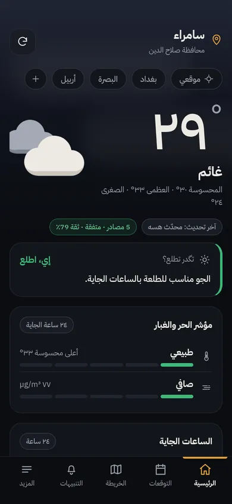
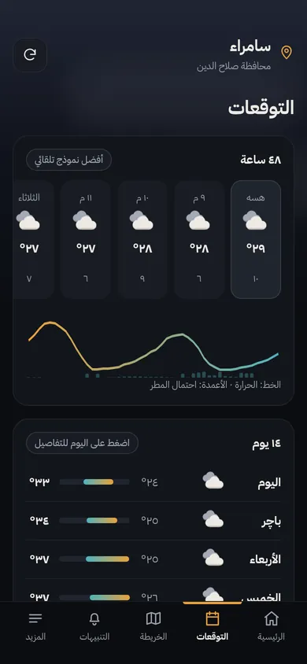
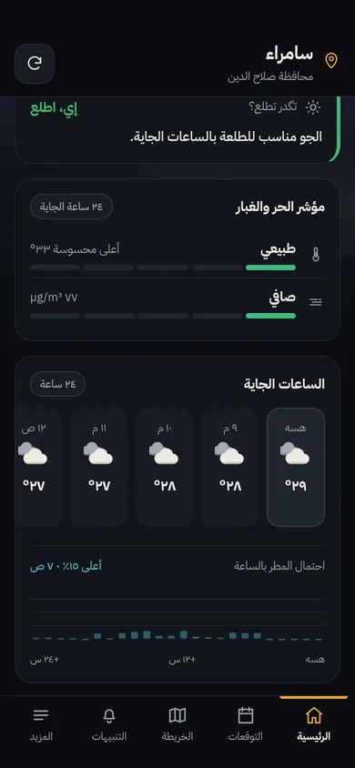
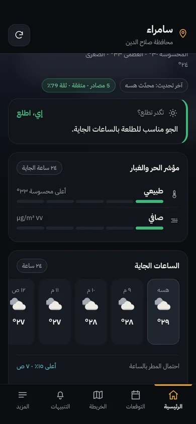
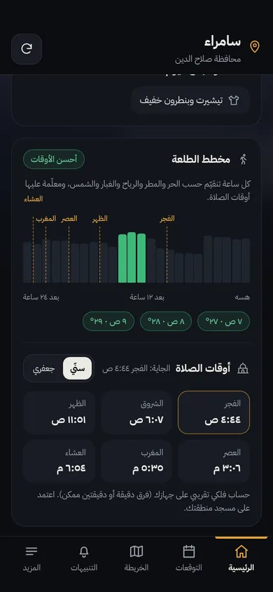
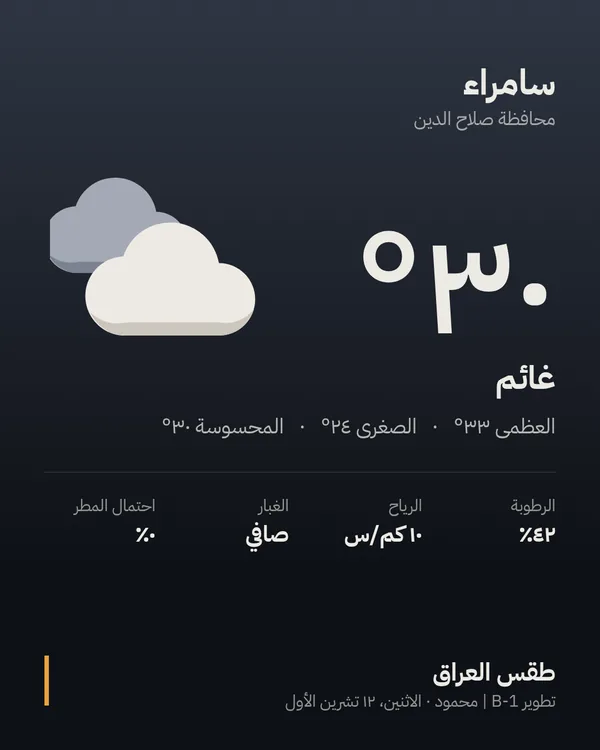
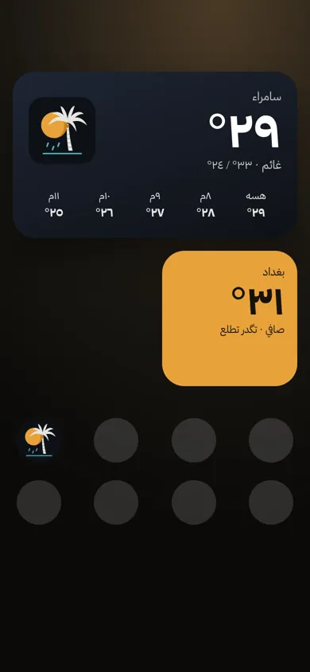

2.0.1١٢ تشرين الأول ٢٠٢٦
- لوگو جديد: نخلة وشمس
- مقدمة جديدة أنعم وأسرع
- أيقونة إشعار جديدة
توقعات من ٦ مصادر عالمية بجواب واحد، تنبيهات عجّة ومطر وحر، وجواب واضح لسؤالك: تگدر تطلع؟
نزّل التطبيق مجاناً






أول ما تفتح التطبيق تشوف جواب واضح: «إي، اطلع» لو «بس انتبه» لو «الأحسن لا». محسوب من الحرارة المحسوسة والمطر والهبّات والغبار للـ١٢ ساعة الجاية.
ما نعتمد على نموذج واحد. التطبيق يجمع توقعات ٦ نماذج عالمية ويأخذ الوسط بينها، ويگلك شكد متفقة، حتى تعرف شكد تثق بالتوقع.
مؤشر بخمس درجات للحر المحسوس وللغبار، بحدود مختارة لجو العراق مو منقولة من أوروبا. ويا كل خطر نصيحة عملية تنفعك.
احتمال المطر لكل ساعة بالـ٢٤ ساعة الجاية، وأعلى ساعة مؤشّرة. ويا التوقعات لـ٤٨ ساعة و١٤ يوم.
كل ساعة تتقيّم، وأحسن الأوقات تتلوّن أخضر. أوقات الصلاة مرسومة على المخطط ومحسوبة على جهازك بدون إنترنت، سنّي أو جعفري.
عجّة، مطر غزير، حر خطير، رياح، برد. الخطير يجيك بصوت إنذار، والعادي بنغمة هادئة، وتگدر تختار ساعات الهدوء.
كل محافظات وأقضية ونواحي العراق، وتگدر تحفظ مدنك المفضلة وتتنقل بينها من شريط فوگ الرئيسية.
بطاقة طقس مرتبة لمدينتك، تنرسل بالواتساب أو الستوري بضغطة وحدة.
ويدجت صغير ومتوسط يتحدّث وحده بالخلفية، تشوف الحرارة والساعات الجاية بدون ما تفتح التطبيق.
آخر توقع ينحفظ على جهازك، فتشوف الطقس حتى لو النت مگطوع.
ماكو حساب ولا إعلانات ولا تتبّع. التطبيق موقّع، ومحمي من التلاعب، والاتصال كله مشفّر.
رسائل مهمة وتنبيهات وتحديثات توصلك من المطوّر بنفس اللحظة، وكلها موقّعة رقمياً حتى محد يگدر يزوّرها.
نفس التطبيق على الكمبيوتر، بمثبّت أو نسخة محمولة. اطلبها من المطوّر.
حرارة المحافظات على الخريطة ورادار المطر مباشرة.
توقعات يومية مفصّلة: المحسوسة، الهبّات، الأشعة، الشروق والغروب.
مظهر داكن وفاتح وأرقام عربية أو إنگليزية، وكلشي على كيفك.
أقل من ١ ميگا، ويشتغل سلس حتى على الأجهزة المتوسطة.
٣٠ ثانية تعرف بيها شنو يسوي التطبيق. (٣٫٥ م.ب، ما يتحمّل إلا تضغط تشغيل.)
اضغط «نزّل التطبيق». ينزل ملف اسمه iraq-weather.apk (٨٠٠ ك.ب).
إذا گلك «لأسباب أمنية لا يسمح بالتثبيت»، اضغط «الإعدادات» وفعّل «السماح من هذا المصدر» للمتصفح (Chrome).
إذا Play Protect سأل، اختار «تثبيت على أي حال». التطبيق موقّع وما يطلب إلا الموقع والإشعارات.
حتى يجيبلك طقس مكانك وتوصلك التنبيهات.
إي، مجاني بالكامل، بدون إعلانات وبدون اشتراك.
قريباً إن شاء الله. لهسه تگدر تنزله من هنا مباشرة، وهو نفس الملف الموقّع الرسمي.
الملف موقّع بمفتاح المطوّر، ويرفض يشتغل إذا أحد عدّل عليه. نزّله بس من هاي الصفحة أو من صفحة الإصدارات بـGitHub.
التطبيق نفسه يگلك من تنزل نسخة جديدة، وتنزلها من نفس الرابط. التحديث ينصب فوگ القديمة وبياناتك تبقى.
لا، هسه للأندرويد (٨ وأحدث)، وأكو نسخة ويندوز.
لا. يفحص التنبيهات بالخلفية بفترات متباعدة، وكل تحديث بحدود كم كيلوبايت.
لا، تگدر تختار مدينتك بإيدك. الموقع بس حتى يجيبلك طقس مكانك بالضبط.
لا، هي تقديرات آلية من نماذج الطقس بحدود تناسب العراق. بالحالات الخطرة تابع الأنواء الجوية والدفاع المدني.
من الإعدادات ← البطارية ← طقس العراق ← «بدون قيود»، وفعّل «التشغيل التلقائي».
مطوّر عراقي. سويت «طقس العراق» حتى يوصل لكل عراقي توقّع دقيق ينفعه بيومه، من العجّة للمطر للحر. أي فكرة أو ملاحظة، بابي مفتوح.